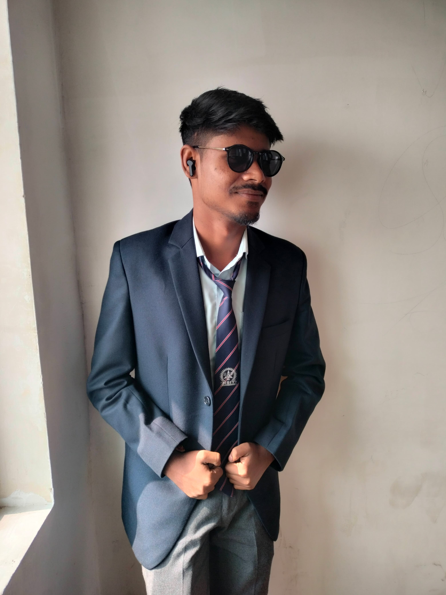

KUNDAN BHARDWAJ
A passionate web developer with expertise in creating dynamic and user-friendly websites.
ABOUT ME!
Motivated and detail-oriented BCA student with a strong foundation in programming and software development. Proficient in Java, C++, JavaScript, and SQL, with hands-on experience in building web based applications. Seeking an opportunity to apply technical skills in a dynamic organization while continuously learning and growing as a software developer.